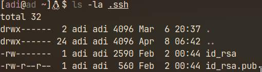
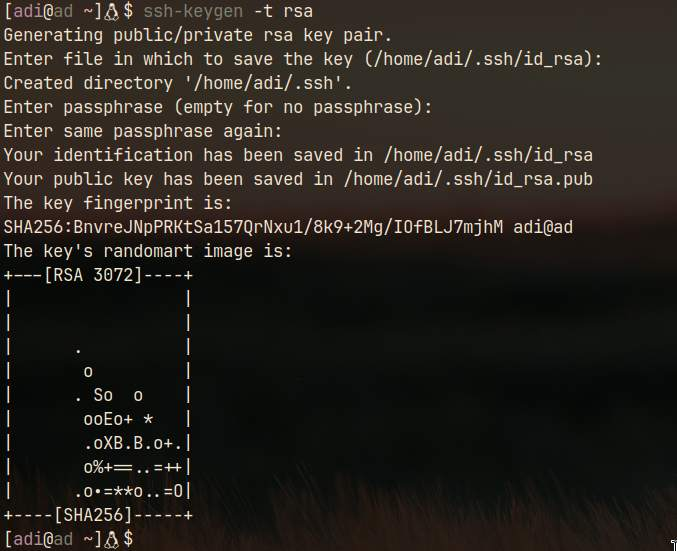
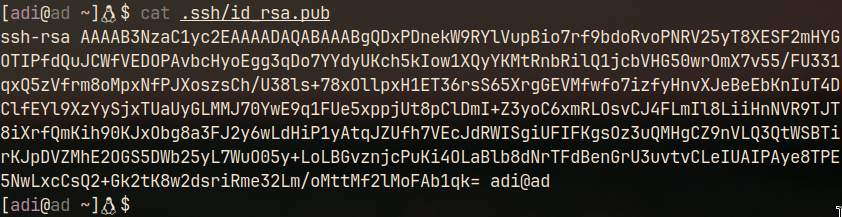
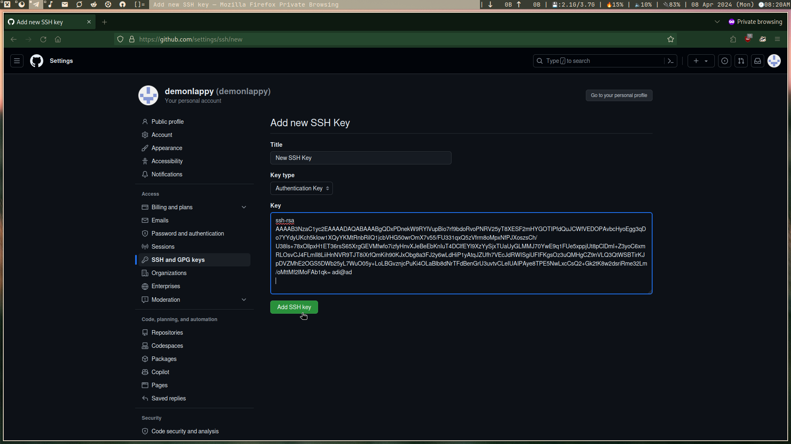

Adding SSH key in Github Profile
- Home
- Adding SSH key
Linux
- Open Terminal.
- Check for existing SSH keys. If keys exists, skip next step and continue from step 4. In my case keys exists, but if your are doing it for first time the you will no see the last two line on can get an error:
ls -la ~/.ssh

- Generate a new SSH key. Press enter whenever it asks for something until you see your shell prompt again:
ssh-keygen -t rsa

- View newly generated ssh key:
cat .ssh/id_rsa.pub

- Simply, copy the SSH key to your clipboard. And go to your github account's profile.
- Add the SSH key to your GitHub account:
- Click on your profile icon in the top right corner of GitHub, then click on "Settings".
- In the left sidebar, click on "SSH and GPG keys".

- Click on "New SSH key" or "Add SSH key".
- Paste your SSH key into the "Key" field and add a descriptive title.
- Click "Add SSH key".
Windows
- Download and install Git for Windows from git-scm.com.
- Open Git Bash from the Start menu.
- Check for existing SSH keys(if keys exists, skip next step and continue from step 4):
ls -al ~/.ssh
- Generate a new SSH key:
ssh-keygen -t rsa
- View newly generated ssh key:
cat .ssh/id_rsa.pub
- Simply, copy the SSH key to your clipboard.
- Add the SSH key to your GitHub account:
- Click on your profile icon in the top right corner of GitHub, then click on "Settings".
- In the left sidebar, click on "SSH and GPG keys".
- Click on "New SSH key" or "Add SSH key".
- Paste your SSH key into the "Key" field and add a descriptive title.
- Click "Add SSH key".